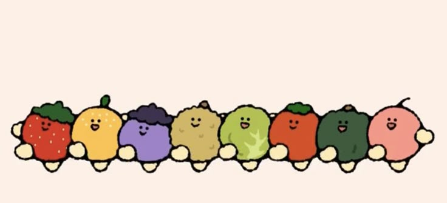

個人簡述
在這裡寫一段簡短而有力的自我介紹，強調你的主要技能、經驗和職業目標。例如：一位經驗豐富的軟體工程師，專精於前端開發，具備開發高效能、使用者友善的Web應用程式的能力。熱衷於學習新技術並解決複雜問題。
工作經歷
職位名稱
公司名稱 | 城市, 國家 | 年/月 - 年/月 (或 至今)
-
簡潔地列出你在該職位的主要職責和成就。使用動詞開頭，並盡可能量化結果。
- 例如：開發並維護響應式使用者介面，提高了20%的使用者參與度。
- 負責專案A的端到端開發，確保按時交付並符合所有技術要求。
-
與跨職能團隊合作，優化了現有系統的性能，減少了15%的載入時間。
職位名稱
公司名稱 | 城市, 國家 | 年/月 - 年/月
- 簡潔地列出你在該職位的主要職責和成就。
- 使用動詞開頭，並盡可能量化結果。
學歷
學位名稱 (例如：資訊工程學士)
學校名稱 | 城市, 國家 | 年/月 - 年/月
- 相關課程、榮譽或專案（可選）。
- 例如：主修資料結構與演算法、資料庫管理、網路安全。
技能
JavaScript
Python
HTML5
CSS3
React
Node.js
SQL
Git
專案管理
溝通協調
個人專案
專案日期或期間
-
簡要描述專案的textarea
火龍果
erica

火龍果
火龍果是一種熱帶水果，外觀獨特，味道鮮美。
特長
-
火龍果的果肉富含維生素C和纖維素，有助於增強免疫系統和促進消化。
-
它的外觀獨特，鮮豔的紅色或黃色外皮上有綠色的鱗片，十分吸引人。
-
火龍果的味道清甜可口，常被用來製作沙拉、果汁或甜點。
-
它還具有抗氧化特性，有助於減少自由基對身體的損害。
火龍果，又稱為紅龍果或仙人掌果，是一種熱帶水果，原產於中美洲和南美洲。它的外觀像是一個大大的粉紅色或黃色的球，上面有綠色的鱗片。火龍果的果肉通常是白色或紅色，並且含有許多小黑籽。這種水果不僅味道鮮美，而且營養豐富，含有大量的維生素C、纖維和抗氧化劑。
行事曆:
|
上午 |
中午 |
下午 |
| 水果品種 |
火龍果 |
奇異果 |
香蕉 |
| 不栽種 |
西瓜 |
哈密瓜 |
葡萄 |
| 結論 |
好吃 |
目的、你的角色和所使用的技術。
-
例如：開發了一個基於React的任務管理應用程式，包含使用者身份驗證和資料儲存功能。
- 應用了Node.js和Express構建後端API。
獎項與證照
- 獎項名稱, 頒發機構 (年/月)
- 證照名稱, 頒發機構 (年/月)